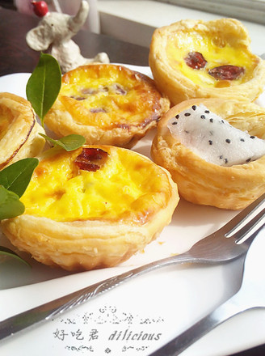
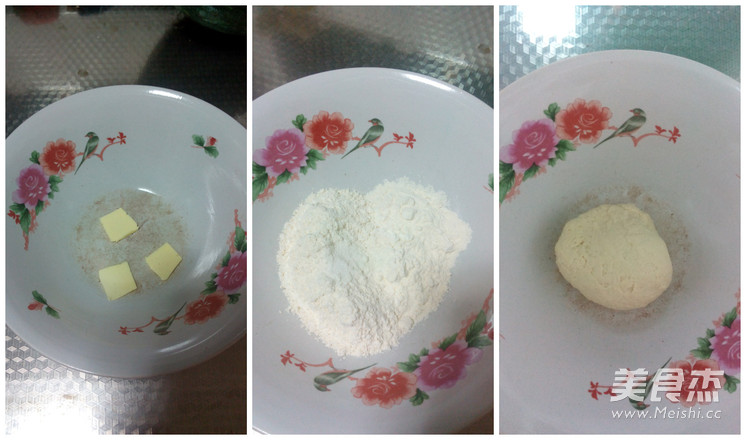
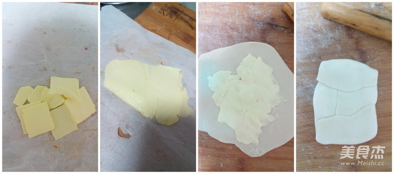
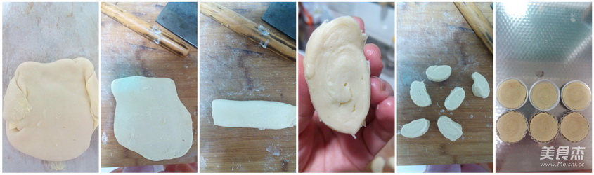
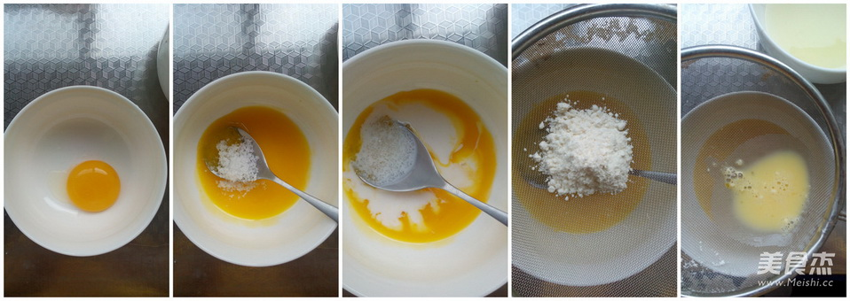
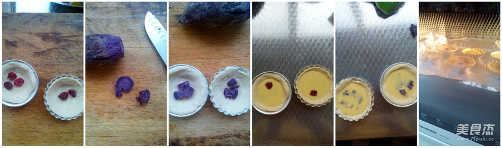
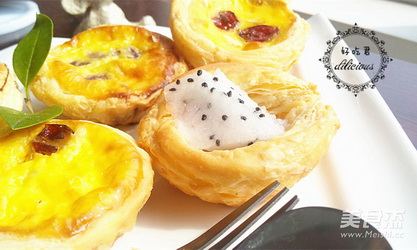
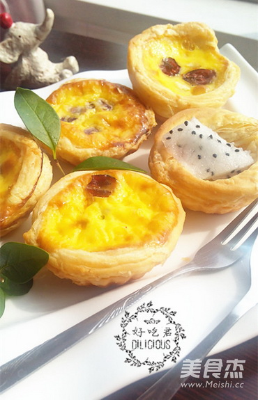

- 精巧可爱的点心
- 香酥蛋挞
- 工艺： 烤
- 口味： 甜味
- 烹饪时间：<30分钟
- 外皮松酥肉馅滑嫩
香酥蛋挞
-
大家国庆过的怎么样呢？是出去游玩参观，还是回家与亲人团聚。昨天刚从老家回来，从网上买的蛋挞模具也回来了，所以迫不及待的就做了蛋挞。第一次做，蛋挞皮和蛋挞液都是自己弄得，也不知道能不能成功，反正试试看。头一天晚上和好蛋挞皮，第二天调好蛋挞液，放到烤箱中，稍等片刻，“叮”的一声，蛋挞就制作好了。d=====(￣▽￣*)b
一直就很喜欢吃酥皮的点心，但是因为酥皮制作起来太麻烦，好久没做过了，这几天玩心大发，把君之的博客翻出来里面的点心挨个玩过去，这次的酥皮，严格按照步骤进行，所有非常的成功，整个过程丝毫都没出油呢！成品出来非常的好吃，外面卖的真的没法比！
-
低筋面粉：120克，高筋面粉:70克
黄油：60克，食盐：2克
蔓越莓干：7颗，紫薯：10克
鸡蛋黄：1个牛奶：20克，白砂糖：10克
做法：
- 介绍一下蛋挞皮的做法： 先准备10g的黄油，室温软化，放入110g低筋面粉和高筋面粉，2g的食盐，加入清水，慢慢的和成面团。和好的面团放入冰箱中冷藏松弛1小时左右
- 剩下的50g黄油放入油纸或者保鲜袋中，室温软化，用擀面杖擀成黄油片，放入冰箱冷藏20分钟左右。 松弛好的面团拿出来，擀大，把黄油放到面团上，收口，用擀面杖在收口处用力敲几下。用均匀的力量擀开面团，擀成长方形。像叠被子一样叠起面片，放入冰箱冷藏20分钟
- 同样，冷藏好的面团拿出来后，擀成长方形，继续像叠被子一样折三折，然后放入冰箱冷藏20分钟。这一步大概需要重复5~6次，而且每做好一次都要放入冰箱冷藏面团20分钟。 最后做好的面团，擀成长方形后卷起来，切成6个大小均匀的小剂子，然后捏成原片放到模具中。如果不着急用的话，就放到冰箱中冷藏起来。用的时候解冻就可以了
- 介绍蛋挞液的做法： 鸡蛋打入碗中，蛋黄蛋清分离，搅散蛋黄。放入白砂糖、牛奶、筛入15g的低筋面粉，搅拌均匀以后，过滤蛋挞液
- 拿出来做好的蛋挞皮，放入紫薯粒、蔓越莓干，放入蛋挞液至7~8分满。 预热烤箱，放入蛋挞，上下火，中层，200度，20分钟即可。 表面上色满意后，可加盖锡纸
- 烤好以后自然放凉 
烹饪技巧：
- 1.做蛋挞皮的时候一定要擀一次面团，冷藏20分钟，不然黄油会随着室温而软化流出来，非常不好操作。
- 2.烤箱的温度一定要根据自家的实际情况来调节。
- 3.我这款蛋挞液是没有淡奶油的，因为家里面的淡奶油刚好用完了，索性就不用了，我吃了一个，觉得对口感没有太大的影响。大家根据情况来定哈